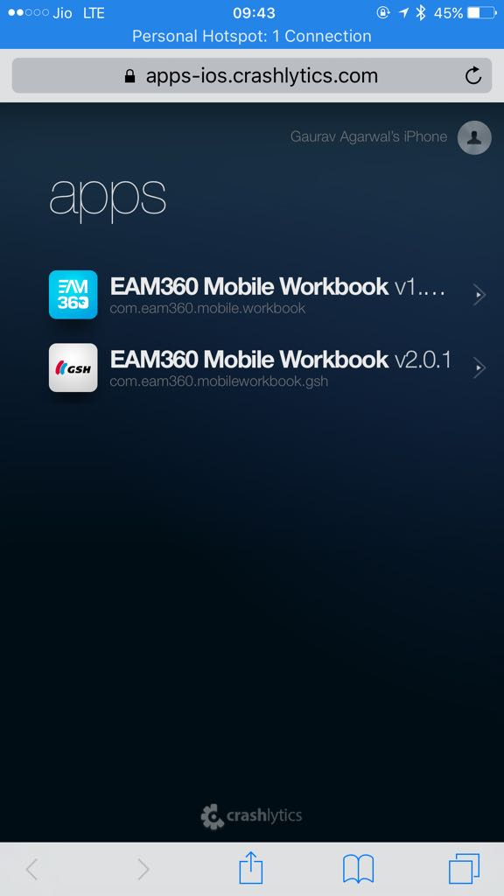

platform :ios do
before_all do
bundle_install
cocoapods
end
desc "Install all dependencies"
lane :install do
carthage(platform: "iOS", use_binaries: false)
end
desc "Update all dependencies"
lane :updateDeps do
sh "pod repo update"
sh "pod update"
carthage(command: "update", platform: "iOS", use_binaries: false)
end
desc "Update carthage"
lane :updateCarthage do
carthage(command: "update", platform: "iOS", use_binaries: false)
end
desc "Runs all the tests"
lane :test do
scan
end
desc "Build development"
lane :build do
environment = ENV["IOS_ENVIRONMENT"]
configuration = get_configuration
UI.message "Building for #{environment} with #{configuration} configuration..."
gym(configuration: configuration)
end
end
Gym
Scan
Crashlytics
for beta releases

Diawi
for sharing pre-release versions
Dealing with multiple environments
enum Environment: String {
case Develop = "Develop"
case Testing = "Testing"
case Production = "Production"
var baseURL: String {
switch self {
case .Production: return "https://prod.eam360.com"
default: return "http://dev.eam360.com"
}
}
var pubnubPubKey: String {
return "pub-c-xxxxxxxx-xxxx-xxxx-xxxx-xxxxxxxxxxxx"
}
var pubnubSubKey: String {
return "sub-c-xxxxxxxx-xxxx-xxxx-xxxx-xxxxxxxxxxxx"
}
var logLevel: XCGLogger.Level {
switch self {
case .Production: return .error
default: return .debug
}
}
}
struct EnvironmentConfig {
lazy var environment: Environment = {
if let configuration = Bundle.main.object(forInfoDictionaryKey: "Configuration") as? String {
switch configuration {
case "Production": return Environment.Production
case "Testing": return Environment.Testing
default: return Environment.Develop
}
}
return Environment.Develop
}()
}
Testing
Quick / Nimble
Calabash
Last but not least
Cocoapods
Carthage
Where are we?
Testers be able to test the code, as and when they want - Done
Developers be able to quickly build and publish an ipa - Done
Stable codebase with good test coverage - In progress
Minimum setup required for new developers - We need new developers to come and test this for us! ;)